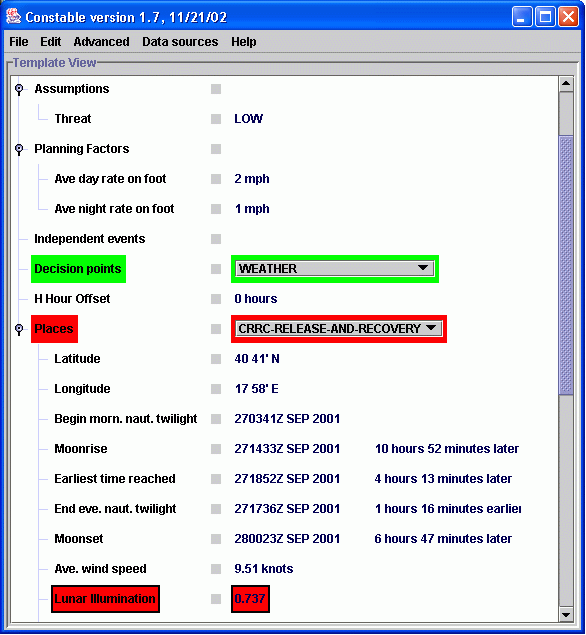
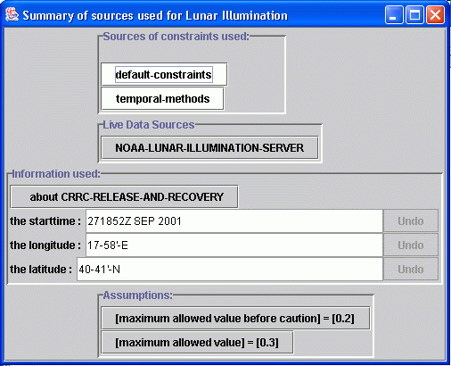
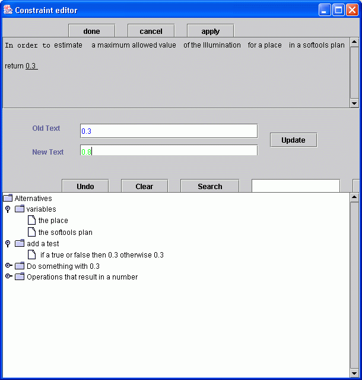
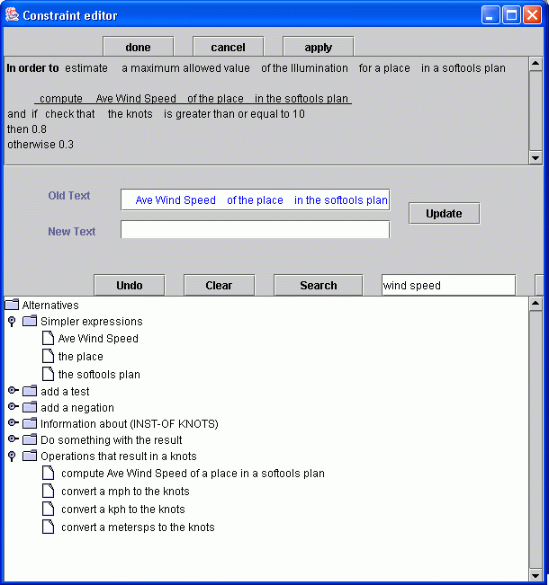
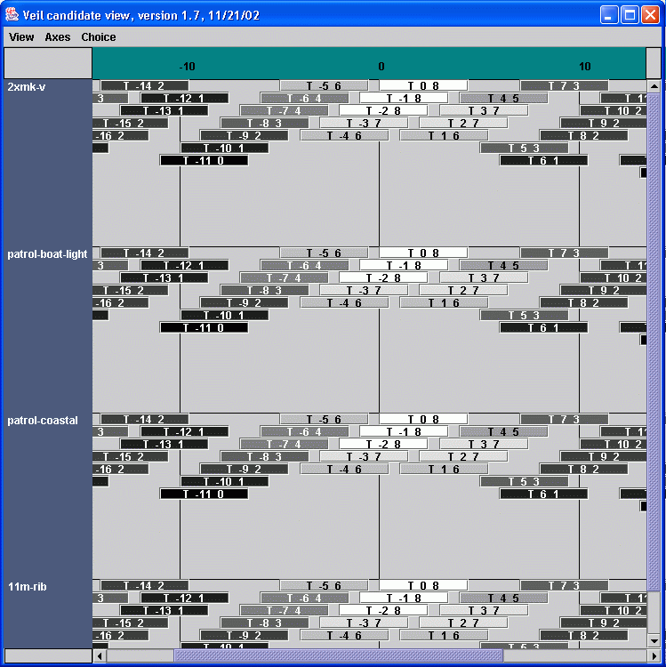

|
|

|
| Constable: helping users to examine and modify constraints | |
Demo
Constable is a Constraint Editing Tool that helps users modify or add knowledge to an intelligent computer system. In this set of screenshots, we show Constable being used to critique a plan created in Softools. This is done with a number of customizable checks on the plan called constraints. Examples of constraints are that an asset used in a movement should be either a CRRC or a Mk-V, or that the lunar illumination should be less than 0.5.Constable demo video
The screen below is the Plan View, which displays a number of
different fields for the plan and is the starting view in Constable. It
displays information about the plan's fields and constraints. For
example, the field labeled "Lunar illumination" has "0.737" as its
value. The red border around the field and its value indicates that a
constraint on this field was not satisfied.

The information that was used in checking a constraint can always be
inspected in Constable, using a menu attached to each line in the Plan
View to display the Sources Window. The screenshot below shows
the information used to compute and check the lunar illumination field
shown in the plan view above. The first panel shows that constraints
from two general groups were used. The second panel, labeled 'Live Data
Sources', shows that some of the information came from querying external
sources such as web sites. The third panel, labeled 'Information used',
summarizes the data that was used in order to compute and check the
field. In this case, the illumination is for the place called
'CRRC-RELEASE-AND-RECOVERY' and its latitude, longitude and start-time
(a Softools field) were used. The fourth panel, labeled 'Assumptions'
shows some of the constraints that were used to check the field.

You can change the way any constraint works using the Constraint
Editor. Suppose we want to increase the maximum allowed value of
the Lunar Illumination field to 0.8. The Constraint Editor is started by
clicking on the line "[maximum allowed value] = [0.3]" in the Sources
Window. The first section at the top displays the current definition of
the constraint. The first part of the definition begins with "In order
to" and is followed by a small description of what the constraint does.
Here, it is followed by "estimate a maximum allowed value of the
Illumination for a place in a plan." The second part of the definition
is found below. This shows how the constraint does its task; in this
case, it always returns the number 0.3. When the user selects the value
0.3 in the upper window, a set of alternatives is generated in the lower
window as shown below. The user can also type a number into the "new
text" field to change the value to 0.8.
Once the edit is complete, it is automatically applied in the Plan
View. In this case, the Lunar Illumination field will change from red to
green.

The Constraint Editor can be used to check a field value in a very
flexible way, perhaps depending on the results of other values. In the
screenshot below, the editor has been used to say that the maximum value
of the lunar illumination depends on the wind speed, perhaps because of
the spray that will be caused. If wind speed is high, the maximum value
can be 0.8, otherwise it should be 0.3. This definition can be created
by repeatedly replacing parts of the text describing the method with the
alternatives that are generated, in a manner similar to following links
in a web browser.
For more details, see a paper
describing the components of Constable, including the editor.

Constable also supports viewing alternative plans in a graphical layout
to help exploring alternatives, using the VEIL system. The plans
are layed out and shaded according to a user-chosen subset of the
constraints used in the Plan View. In the example shown below, around a
hundred alternative plans are shown, in which the starting time of the
plan and the equipment used are varied. The position shows the choices
and the color shows how well the plan satisfies some of the constraints
used in the Plan View. The display shows that the plan's quality
degrades gradually as the start time moves from the current time, but is
independent of the equipment.

The user can alter the layout by choosing different constraints from the
Plan View, and can alter the relative weighting of different constraints
used to rate the alternative plans. The weighting can either be changed
directly or through an inductive technique applied to pair-wise
preferences given by the user.
For more details, see the
paper on VEIL.